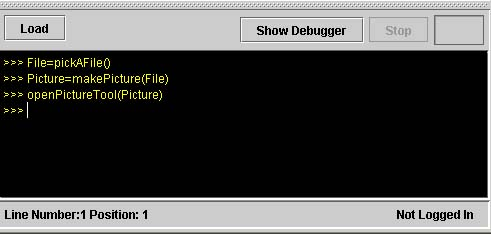

PictureTool allows you to find information about digital images.
Opening an Image
To open an image using the PictureTool:
- Create an image using makePicture() or makeEmptyPicture(x,y)
- Run the command openPictureTool(Picture) where Picture is the picture
you just created

You can also open an image from the MediaTools menu:
- Create an image using makePicture() or makeEmptyPicture(x,y)
- Select the 'MediaTools' menu and choose 'Picture Tool...'
- A menu will pop up prompting you to choose the Picture you want to display, choose one and press 'OK'

Once you have opened an image, you can view information about its individual pixels by looking at the toolbar. To select a pixel drag (click and hold down) the mouse to the position you want and then release it to hold that position's information in the toolbar.
The following information in the toolbar changes to reflect the properties of the pixel you selected:
X= the x coordinate of the pixel (its horizontal position, counting from the left)
Y = the y coordinate of the pixel (its vertical position, counting from the top)
R = the Red value of the pixel (0 to 255)
G = the Green value of the pixel (0 to 255)
B = the Blue value of the pixel (0 to 255)
In addition, the box at the far right displays the color of the pixel.
To Zoom, select the amount of zoom you want from the zoom menu. Less than 100% zooms out and more than 100% zooms in. The 100% zoom level will always return you to your orginal picture.